Sistem Klasifikasi Kerusakan Jalan Berbasis Artificial Intelligence
RoadPulse menerima foto permukaan jalan dari dashboard web atau aplikasi mobile, mengklasifikasikannya ke dalam empat kelas (Crack, Pothole, Surface Erosion, Normal) dengan model MobileNetV2, lalu menyimpan hasil beserta lokasi GPS untuk ditampilkan sebagai statistik, peta, dan riwayat inspeksi.
Disusun oleh · Kelompok 5
Bagas Aryaputra Dito Gilan Permadi Laika Apriyadi M. Davin Rahadian
Teknologi Rekayasa Internet Jurusan Teknologi Informasi Politeknik Negeri Lampung
Dokumen
Versi 1.2 · 3 November 2026
Informasi Dokumen
Tabel 1. Identitas dokumen
Atribut
Keterangan
Nama aplikasi
RoadPulse – Sistem Klasifikasi Kerusakan Jalan Berbasis AI
Jenis dokumen
User Manual (panduan pengguna, alur sistem, penanganan error, catatan pengujian)
Versi dokumen
1.2 — 3 November 2026 (layar Masuk/Daftar dan bagian Akun di aplikasi mobile, endpoint pendaftaran, cara menjalankan dengan ./start.sh). Versi 1.1 — 3 November 2026 (desain baru aplikasi mobile). Versi 1.0 — 30 Oktober 2026.
Versi aplikasi
Tidak ada nomor rilis resmi. mobile/app.json dan mobile/package.json mencatat 1.0.0; API Swagger mencatat 1.0.0. Backend & web tidak memiliki nomor versi tersendiri.
Basis kode yang diaudit
Repository lokal Dito1290/RoadPulse, commit 397c370 ("Vidio Demo Web Road Pulse", 25 Okt 2026) ditambah perubahan lokal yang belum di-commit (lihat catatan di bawah).
Tujuan dokumen
Menjelaskan cara memakai RoadPulse sesuai implementasi yang benar-benar ada: aktor dan hak akses, alur utama, pesan error, serta status fitur untuk penguji.
Target pembaca
Petugas/surveyor lapangan, operator dashboard, administrator sistem, dosen penilai, dan tester.
Sumber bukti
Kode sumber (backend, frontend, mobile), respons API nyata, dan tangkapan layar dari aplikasi yang dijalankan secara lokal pada 30 Oktober 2026.
Kondisi kode yang didokumentasikan. Konflik hasil git stash pop pada backend/db.sqlite3 dan settings.py sudah diselesaikan (3 November 2026: kedua versi data digabung menjadi 23 record), tetapi masih ada perubahan yang belum di-commit, antara lain perbaikan settings.py, pemetaan label model AI, backend/proxy.js, frontend/js/config.js, mobile/config.js, dan desain ulang aplikasi mobile (mobile/App.js, mobile/screens/, mobile/components/, mobile/theme/). Seluruh perilaku dalam dokumen ini mengacu pada kondisi lokal tersebut. Jika tim memakai kode commit 397c370 murni, beberapa perilaku (terutama mobile dan alamat API) akan berbeda.
Konvensi penulisan
Tabel 2. Konvensi
Penanda
Arti
teks monospace
Nama file, endpoint, perintah, atau nilai yang diketik persis.
Tombol
Label tombol/menu sebagaimana tertulis di aplikasi.
"Pesan"
Pesan error/sukses yang dikutip langsung dari kode atau respons server.
Gambar berlabel Ilustrasi
Gambar buatan berdasarkan kode, bukan tangkapan layar asli.
Data uji
Data contoh untuk tangkapan layar: 14 gambar dari folder dataset/ diklasifikasi lewat API pada database terpisah. Nama lokasi "Titik uji NN" dan koordinatnya adalah titik contoh, bukan laporan lapangan nyata.
RoadPulse adalah sistem pemantauan kondisi permukaan jalan untuk wilayah Bandar Lampung. Petugas memotret jalan, sistem mengklasifikasikan foto dengan model deep learning, lalu hasilnya tersimpan bersama waktu dan lokasi sehingga dapat direkap pada dashboard.
1.1 Tujuan
Laporan kelompok menyebut masalah utama: pemetaan kerusakan jalan masih manual, lambat, dan tidak konsisten antarsurveyor. RoadPulse menjawabnya dengan identifikasi otomatis jenis kerusakan dari foto lapangan dan rekap statistik dalam satu dashboard.
1.2 Fungsi utama yang terbukti di kode
Tabel 3. Fungsi utama dan lokasi implementasinya
Fungsi
Kanal
Bukti di kode
Klasifikasi foto ke 4 kelas: Crack, Pothole, Surface Erosion, Normal
Web, mobile, API
POST /api/v1/classify/ → api/views.py: ClassifyView → ai_model/model_loader.py
Penyimpanan hasil + foto + GPS + waktu foto
Backend
api/models.py: InspectionRecord, file ke media/uploads/
Statistik jumlah per kelas & 5 inspeksi terbaru
Web, mobile
GET /api/v1/dashboard/stats/
Riwayat inspeksi, 10 per halaman
Web, mobile (halaman 1)
GET /api/v1/dashboard/history/?page=N
Peta titik inspeksi ber-GPS (maks. 1000)
Web
GET /api/v1/dashboard/map/ + Leaflet/OpenStreetMap
Ekspor riwayat ke CSV
Web
frontend/js/dashboard.js: downloadReport()
Login berbasis token
Web, mobile
POST /api/v1/auth/login/ (DRF Token)
Pendaftaran akun mandiri
Mobile
POST /api/v1/auth/register/ → api/views.py: RegisterView
Pengelolaan data (ubah/hapus record, akun, token)
Django Admin
api/admin.py mendaftarkan semua model
Dokumentasi API interaktif
Browser
/api/docs/ (Swagger), /api/redoc/, /api/schema/
1.3 Gambaran arsitektur
Gambar 1. Arsitektur RoadPulse. Client web dan mobile memanggil API melalui proxy Node.js di port 8000, yang meneruskan ke Django di port 8001. Django menyimpan data, file foto, dan menjalankan model AI.
Browser modern yang mendukung fetch, FileReader, Geolocation (diuji dengan Google Chrome)
Aplikasi Expo Go yang mendukung SDK 58
Python 3.11 (venv backend/venv311), Node.js ≥ 20, PostgreSQL atau SQLite
Jaringan
Akses ke server (port 8000) dan internet untuk CDN Chart.js/Leaflet/exifr, Google Fonts, peta OpenStreetMap, dan Nominatim
Satu jaringan Wi-Fi/hotspot dengan komputer server; internet untuk peta (Leaflet dari unpkg + tile OpenStreetMap) dan nama jalan (geocoder perangkat)
Port 8000 harus dapat dijangkau dari LAN
Izin perangkat
Izin lokasi browser (opsional, untuk GPS)
Izin kamera (wajib) dan lokasi (opsional)
—
Akun
Tidak wajib. Akun hanya untuk halaman login (dibuat oleh admin)
Wajib. Masuk dengan akun yang ada, atau buat akun sendiri lewat tab Daftar
Akun staff/superuser untuk Django Admin
Registrasi mandiri tersedia di aplikasi mobile dan di halaman login web (tab Daftar), keduanya memakai POST /api/v1/auth/register/. Akun yang dibuat selalu akun biasa (bukan staff) dan dapat dipakai di web maupun mobile. Akun admin dibuat dengan python manage.py createsuperuser. Untuk mencegah spam dan tebak kata sandi, server membatasi 10 percobaan login per menit dan 5 pendaftaran per jam untuk setiap alamat IP.
2.1 Menjalankan layanan (untuk penyelenggara)
Seluruh layanan (Django, proxy, dashboard web, dan Expo) dijalankan dengan satu perintah dari folder proyek:
cd RoadPulse
./start.sh # pindai QR yang muncul dengan Expo Go
Skrip start.sh otomatis: (1) menghentikan sisa layanan lama di port 8000/8001/3000 sehingga tidak muncul error EADDRINUSE, (2) menjalankan Django 127.0.0.1:8001 memakai PostgreSQL, proxy 0.0.0.0:8000, dan dashboard web :3000 di latar belakang, (3) menunggu sampai API benar-benar menjawab, (4) menulis IP Wi-Fi komputer saat ini ke mobile/.env.local, lalu (5) menjalankan npx expo start --clear. Tekan Ctrl+C sekali untuk mematikan semuanya.
Tabel 6. Variasi perintah
Perintah
Kegunaan
./start.sh
Semua layanan + Expo (pemakaian normal)
./start.sh --no-mobile
Hanya backend, proxy, dan dashboard web (tanpa Expo)
DB_ENGINE=sqlite ./start.sh
Memakai SQLite (backend/db.sqlite3) sebagai cadangan, bukan PostgreSQL
tail -f .logs/django.log
Melihat log Django; tersedia juga .logs/proxy.log dan .logs/frontend.log
Persiapan sekali saja (sebelum ./start.sh pertama kali): pasang PostgreSQL 18 (installer EDB), buat database dengan /Library/PostgreSQL/18/bin/createdb -U postgres -h localhost Roadpulse_db, pastikan backend/.env berisi DB_NAME=Roadpulse_db, DB_USER=postgres, DB_PASSWORD=roadpulse, DB_HOST=127.0.0.1, DB_PORT=5432, lalu cd backend && python3.11 -m venv venv311 && venv311/bin/pip install -r requirements.txt && venv311/bin/python manage.py migrate dan cd ../mobile && npm install. Bila skrip menulis "✗ API tidak merespons", isi log Django dan proxy langsung ditampilkan.
/Library/PostgreSQL/18/bin/psql -U postgres -h localhost -d Roadpulse_db, lalu \dt (daftar tabel), select * from api_inspectionrecord limit 5;, \q (keluar)
Kata sandi roadpulse hanya untuk pemakaian lokal. Bila log Django menampilkan password authentication failed for user "postgres", samakan DB_PASSWORD di backend/.env dengan kata sandi PostgreSQL, atau jalankan sementara dengan DB_ENGINE=sqlite ./start.sh.
Jangan memakai port 8001 di aplikasi mobile atau dashboard. Django sengaja hanya mendengarkan 127.0.0.1. Bila log Expo menampilkan Backend connection error (http://<IP>:8000): Gagal terhubung ke server., pastikan ./start.sh masih berjalan dan ponsel satu Wi-Fi dengan komputer, lalu tekan r di terminal Expo untuk memuat ulang aplikasi.
Tabel 8. Alamat penting
Halaman
URL
Dashboard web
http://localhost:3000 (dari perangkat lain: http://<IP-LAN>:3000)
Aplikasi mobile otomatis memakai IP komputer yang menjalankan Expo (port 8000). Alamat dapat diganti dari aplikasi melalui tombol Pengaturan (ikon roda gigi) di pojok kanan atas, atau lewat EXPO_PUBLIC_API_URL di mobile/.env.local.
3. Peta Interaksi dan Aktor
Audit dilakukan pada settings.py (REST_FRAMEWORK), api/views.py, api/admin.py, frontend/js/*.js, dan kode mobile (mobile/App.js, mobile/screens/*). Hasilnya: tidak ada sistem role khusus aplikasi. Pembedaan akses hanya berasal dari mekanisme bawaan Django: pengguna anonim, akun biasa, dan akun staff/superuser.
Gambar 2. Diagram aktor dan hak akses. Garis menunjukkan fitur yang dapat digunakan setiap aktor. Kotak merah berisi role/fitur yang dicari tetapi tidak ditemukan dalam implementasi.
Tabel 9. Bukti implementasi otorisasi
Temuan
Bukti
Data inspeksi wajib login
DEFAULT_PERMISSION_CLASSES = ['rest_framework.permissions.IsAuthenticated']; IsAuthenticated pada ClassifyView, DashboardStatsView, InspectionHistoryView, InspectionMapView, LogoutView. Hanya LoginView, RegisterView, /api/v1/, /privacy/, dan /healthz/ yang publik (diuji: tanpa token → 401).
Dashboard web mewajibkan login
Semua request data memakai authFetch() (frontend/js/config.js) yang mengirim Authorization: Token; tanpa token atau saat 401, halaman kembali ke login.html.
Token dipakai web & mobile
Token di localStorage['rp_token'] (web) dan AsyncStorage roadpulse:session (mobile) dikirim pada setiap request data dan upload. Logout memanggil POST /api/v1/auth/logout/ sehingga token dicabut di server.
Admin dibatasi akun staff
Django Admin menolak akun non-staff: "Please enter the correct username and password for a staff account…" (diuji).
Tidak ada field status/role
InspectionRecord hanya memiliki image, class_label, confidence_score, latitude, longitude, location_name, captured_at, created_at.
3.1 Rincian setiap aktor
Tabel 10. Profil aktor
Aspek
Pengguna umum
Pengguna terdaftar
Administrator
Identitas & fungsi
Petugas lapangan/operator yang memotret atau mengunggah foto jalan dan melihat rekap
Pemilik akun Django biasa (is_staff = false)
Pemilik akun Django dengan is_staff/is_superuser
Cara akses
Hanya dapat membuka halaman login/daftar dan Kebijakan Privasi; data inspeksi tidak dapat dilihat
Web: login di login.html. Mobile: layar Masuk, atau buat akun di tab Daftar
Login/logout web; aplikasi mobile lengkap (kamera, hasil, ringkasan, peta, riwayat, pengaturan, keluar), daftar akun
Django Admin, Swagger/ReDoc, portal API
Batasan
Tidak dapat mengubah/menghapus data; tidak ada akses admin
Tidak dapat masuk Django Admin; token tidak memberi hak tambahan
—
Tidak diperbolehkan
Mengunggah file selain JPEG/PNG atau > 10 MB (ditolak)
Mengakses Django Admin
— (tidak ada pembatasan tambahan di kode)
Hubungan dengan sistem
Sumber data inspeksi
Pengguna dashboard yang teridentifikasi di browser
Pengelola dan pengoreksi data
Tabel 11. Matriks hak akses fitur
Fitur
Umum
Terdaftar
Admin
Klasifikasi foto (web & mobile)
✓
✓
✓
Statistik, peta, riwayat
✓
✓
✓
Unduh CSV
✓
✓
✓
Login/logout web
—
✓
✓
Aplikasi mobile (perlu login)
—
✓
✓
Daftar akun mandiri (mobile)
✓
—
—
Django Admin: ubah/hapus record
✗
✗
✓
Kelola akun & token
✗
✗
✓
Role yang belum dapat diverifikasi: pelapor terpisah, verifikator laporan, dan petugas dinas. Tidak ada model, permission, grup, atau UI yang mendukungnya, sehingga tidak didokumentasikan sebagai aktor.
4. Panduan Dashboard Web
4.1 Masuk ke aplikasi
Buka http://localhost:3000/login.html. Halaman login bersifat opsional karena dashboard (index.html) juga dapat dibuka langsung.
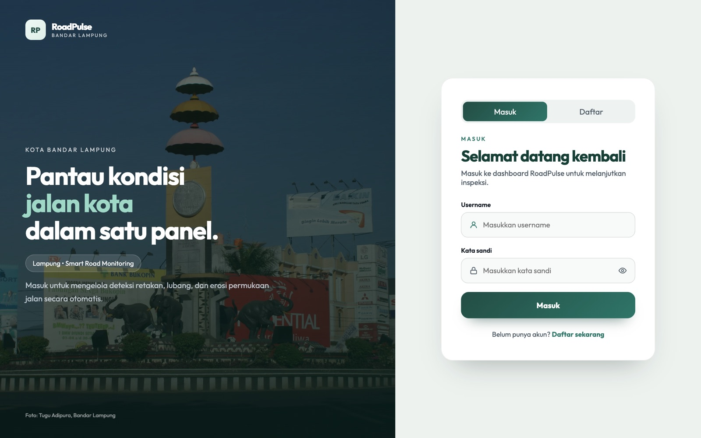
Gambar 3. Halaman login web (tangkapan layar asli).
Isi Username dan Kata sandi. Ikon mata menampilkan/menyembunyikan kata sandi. Belum punya akun? Klik tab Daftar atau tautan Daftar sekarang (bagian 4.1a).
Klik Masuk. Tombol berubah menjadi "Memproses..." selama permintaan berlangsung.
Jika berhasil, token disimpan di browser dan halaman berpindah ke dashboard. Jika token sudah ada, halaman login langsung mengarahkan ke dashboard.
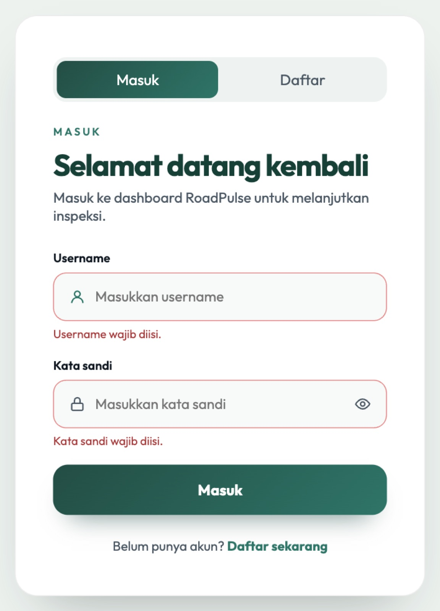
Gambar 4. Validasi form kosong: pesan tampil di bawah setiap kolom.
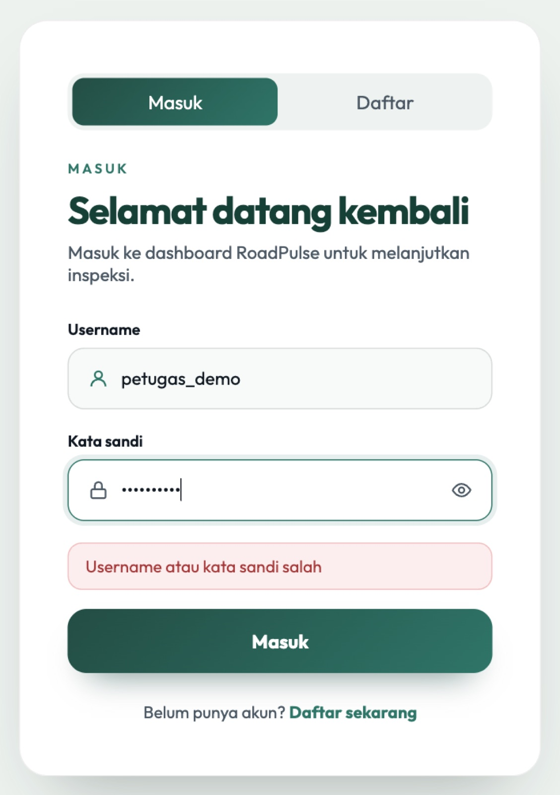
Gambar 5. Kredensial salah (HTTP 401).
4.1a Membuat akun baru (web)
Pada halaman login, klik tab Daftar (atau buka login.html#daftar).
Isi Username (3–30 karakter: huruf, angka, titik, garis bawah), Kata sandi (minimal 8 karakter, tidak boleh terlalu umum, seluruhnya angka, atau mirip username), dan Ulangi kata sandi sampai muncul "✓ Kata sandi cocok".
Klik Daftar & masuk. Akun dibuat sebagai pengguna biasa dan dashboard langsung terbuka. Kesalahan dari server (mis. "Username sudah dipakai. Coba yang lain.") tampil di bawah kolom terkait.
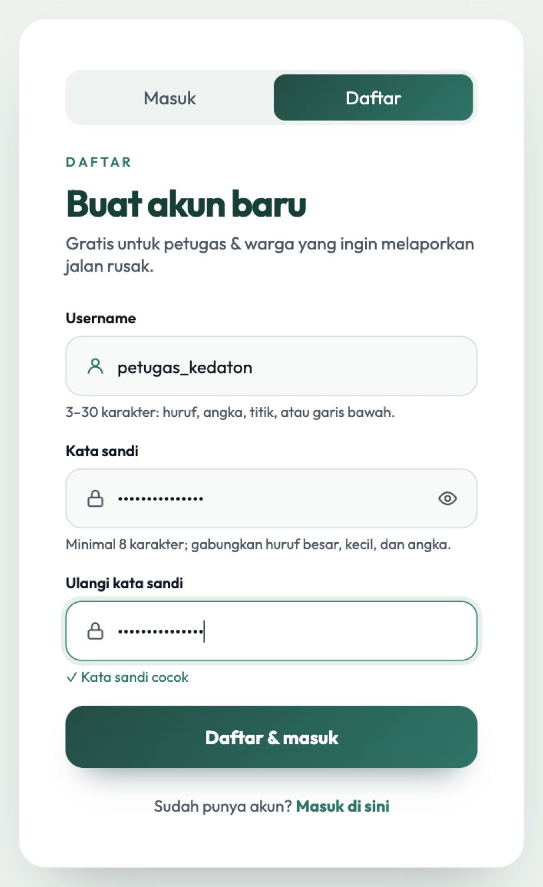
Gambar 6. Form daftar akun baru di web.
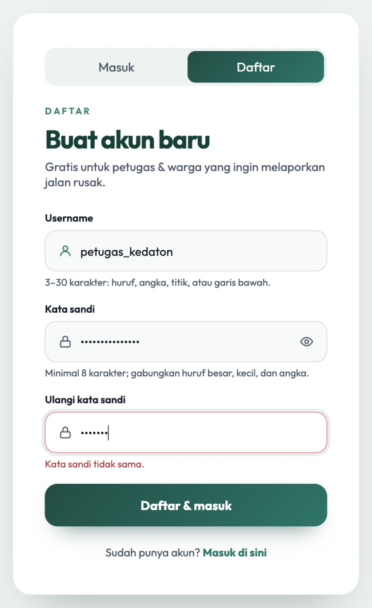
Gambar 7. Validasi: kata sandi tidak sama.
4.2 Navigasi dashboard
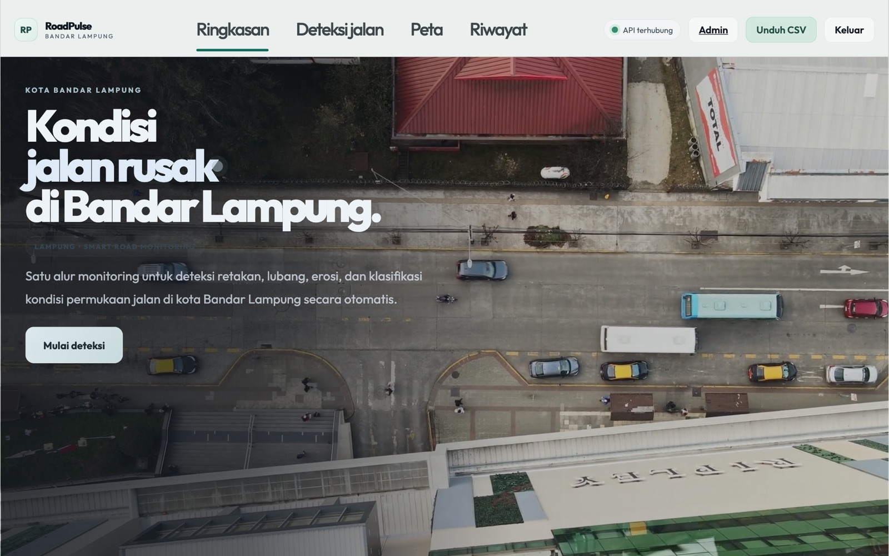
Gambar 8. Halaman utama dashboard (tangkapan layar asli) setelah login.
Tabel 12. Elemen header
Elemen
Fungsi
Menu Ringkasan · Deteksi jalan · Peta · Riwayat
Menggulir ke bagian terkait pada halaman yang sama.
Status API terhubung / API tidak terhubung
Hasil pemanggilan statistik & riwayat saat halaman dimuat.
Admin
Membuka /admin/ pada alamat API (port 8000).
Unduh CSV
Mengunduh seluruh riwayat; nonaktif bila belum ada data.
Keluar
Menghapus token dari browser dan membuka halaman login.
Mulai deteksi
Menggulir ke bagian unggah foto.
4.3 Mengunggah dan mengklasifikasikan foto
Pada bagian Unggah foto jalan, klik area unggah atau seret foto ke dalamnya. Pemilih file dibatasi image/jpeg, image/png.
Pratinjau muncul bersama Waktu foto (dari EXIF DateTimeOriginal/CreateDate, atau waktu modifikasi file bila EXIF tidak ada) dan Lokasi foto (dari GPS EXIF bila ada).
Opsional: klik Ambil lokasi GPS untuk memakai lokasi perangkat; nama jalan dicari melalui Nominatim (OpenStreetMap).
Klik Analisis foto. Jika GPS belum ada, sistem mencoba mengambilnya otomatis; bila gagal, analisis tetap dilanjutkan tanpa titik peta.
Hasil tampil pada Hasil klasifikasi dengan label Bahasa Indonesia (Retakan, Lubang, Erosi permukaan, Normal). Bila keyakinan < 50 %, muncul peringatan "Hasil kurang yakin, sebaiknya foto ulang" dan angka keyakinan di riwayat diberi warna kuning. Statistik, peta, serta riwayat dimuat ulang.
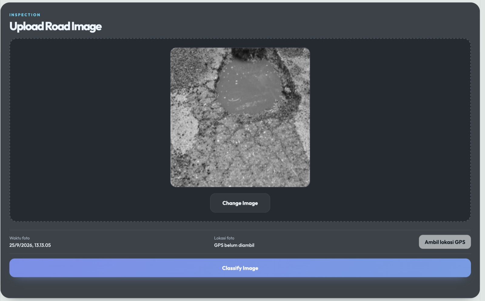
Gambar 9. Pratinjau foto sebelum lokasi diambil.Gambar 10. Setelah Ambil lokasi GPS: "Lokasi GPS berhasil diperoleh."
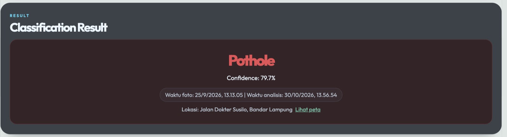
Gambar 11. Hasil klasifikasi: kelas, keyakinan, waktu foto & analisis, lokasi, dan tautan Lihat peta.
4.4 Statistik
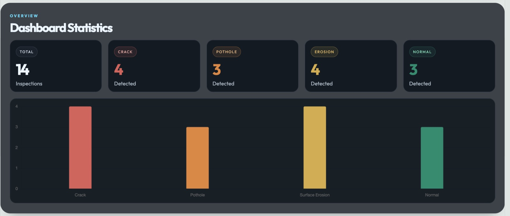
Gambar 12. Kartu jumlah per kelas dan grafik batang distribusi (Chart.js). Data uji sebelum unggahan baru.
4.5 Peta lokasi
Setiap record yang memiliki latitude dan longitude ditampilkan sebagai titik: hijau untuk Normal, merah untuk kelas kerusakan. Klik titik untuk melihat kelas, lokasi, waktu, dan tautan Buka peta. Record tanpa GPS tidak tampil di peta.
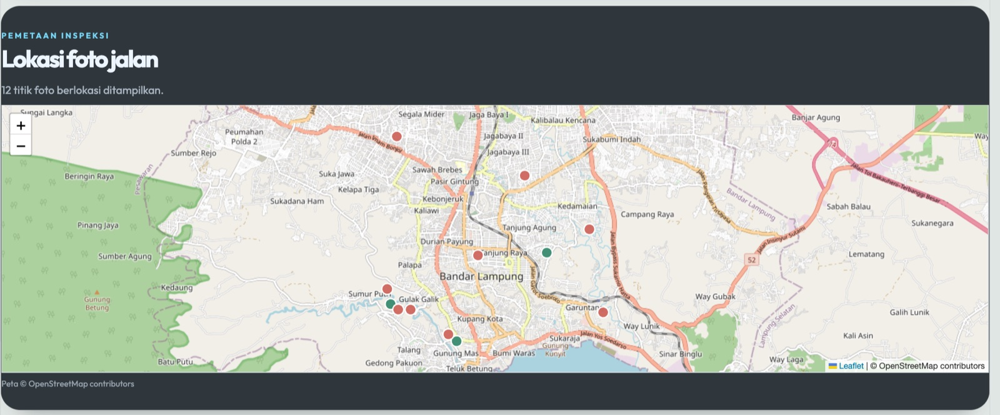
Gambar 13. Peta inspeksi: 12 dari 14 record data uji memiliki koordinat.
4.6 Riwayat dan ekspor CSV
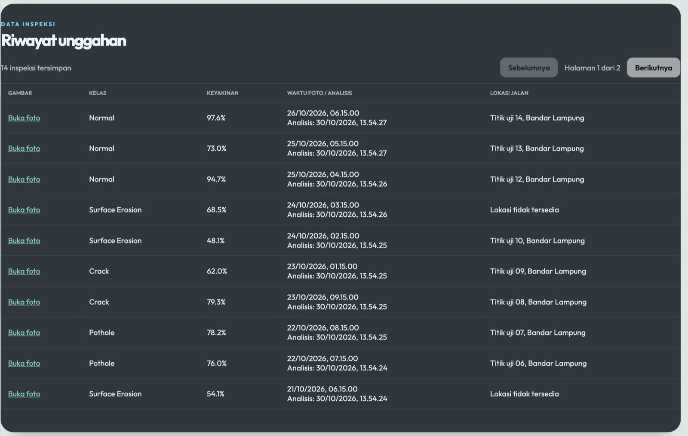
Gambar 14. Tabel riwayat (10 per halaman) dengan tombol Sebelumnya/Berikutnya.
Kolom: tautan Buka foto, kelas, keyakinan, waktu foto/analisis, dan lokasi (nama jalan, koordinat bertaut ke OpenStreetMap, atau "Lokasi tidak tersedia").
Tombol Unduh CSV mengambil semua halaman riwayat lalu mengunduh roadpulse-riwayat.csv (UTF-8 dengan BOM) berkolom kelas, confidence, waktu_foto, waktu_analisis, lokasi_jalan, latitude, longitude, image_url. Diuji: file berisi header + 15 record dari dua halaman riwayat.
4.7 Keluar (logout)
Klik Keluar. Token dicabut di server (POST /api/v1/auth/logout/), dihapus dari browser, dan halaman berpindah ke login. Membuka index.html setelah logout langsung diarahkan kembali ke login.
4.8 Tampilan pada layar kecil
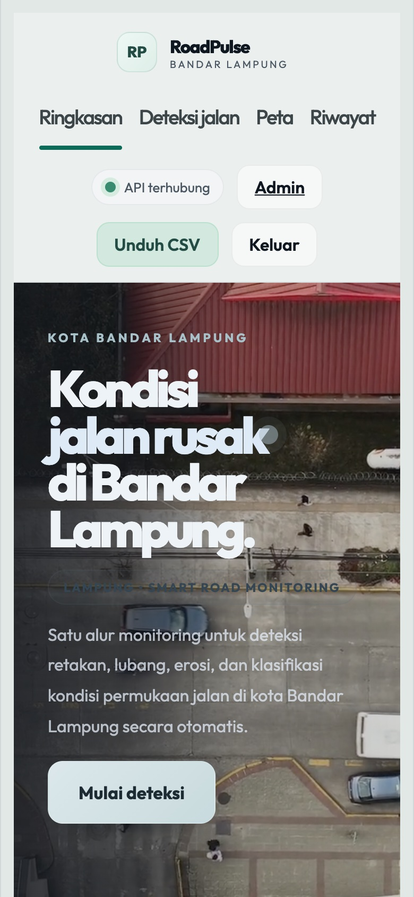
Gambar 15. Dashboard web pada lebar 390 px.
Dashboard bersifat responsif: menu dan tombol tersusun ulang pada layar sempit. Untuk pemakaian lapangan tersedia aplikasi mobile terpisah (Bab 5).
5. Panduan Aplikasi Mobile
Ilustrasi — bukan tangkapan layar. Simulator iOS/Android tidak tersedia pada komputer penyusun, sehingga tampilan di bawah digambar ulang dari kode mobile terbaru (mobile/App.js, mobile/screens/*, mobile/components/*) memakai warna, teks, dan susunan dari mobile/theme/tokens.js. Kode telah lolos bundling Android & iOS (npx expo export, 3 November 2026), tetapi pengujian langsung di perangkat belum dapat diverifikasi.
Aplikasi memakai desain RoadPulse · Lampung Edition: tema gelap navy sebagai bawaan dengan aksen hijau emerald, ornamen mahkota Siger dan garis motif Tapis sebagai aksen regional. Aplikasi dibuka dengan layar Masuk/Daftar berlatar video lalu lintas kota (sama dengan hero dashboard web); setelah masuk, navigasi utama berupa tiga tab di bawah layar: Beranda, Ringkasan, Riwayat.
M0a · Masuk
M0b · Daftar akun baru
Gambar 16. Ilustrasi layar Masuk (M0a) dan Daftar akun baru (M0b). Latar pada aplikasi berupa video bergerak; nama akun hanya contoh.
M1 · Beranda (status & ringkasan)
M2 · Beranda (peta & laporan terbaru)
M3 · Kamera
Gambar 17. Ilustrasi Beranda (M1–M2) dan layar kamera (M3), tema gelap. Angka, nama jalan, dan koordinat hanya contoh.
5.1 Langkah penggunaan
Pastikan ponsel satu jaringan dengan komputer server, lalu buka proyek di Expo Go dengan memindai QR dari ./start.sh.
Masuk (M0a): chip di kanan atas menunjukkan status server (Online/Offline/Memeriksa; ketuk untuk membuka Pengaturan alamat server). Isi Username dan Kata sandi lalu ketuk Masuk (tombol menampilkan "Memeriksa akun…"). Sesi disimpan di perangkat, jadi aplikasi tidak meminta login lagi saat dibuka ulang.
Belum punya akun? Ketuk tab Daftar atau tautan Daftar sekarang (M0b). Username 3–30 karakter (huruf, angka, titik, garis bawah); kata sandi minimal 8 karakter dengan indikator kekuatan Lemah/Cukup/Kuat/Sangat kuat; isi Ulangi kata sandi sampai muncul "✓ Kata sandi cocok". Ketuk Daftar & masuk: akun dibuat dan aplikasi langsung masuk.
Setelah masuk, Beranda menyapa dengan nama akun (contoh "Selamat pagi, petugas_kedaton · Tabik Pun!"). Aplikasi meminta izin lokasi sekali. Kartu Status sistem di Beranda (M1) menampilkan Server (Memeriksa… → Online/Offline beserta alamat), GPS (Mencari sinyal… → Aktif/Izin ditolak), dan waktu Diperbarui.
Beranda (M1) menampilkan ringkasan: Total laporan, Perlu perbaikan (retakan & lubang), Perlu dipantau (erosi), Normal, serta bilah Tingkat kerusakan. Ketuk Detail untuk membuka tab Ringkasan.
Gulir Beranda (M2): Peta kerusakan jalan (Leaflet + OpenStreetMap, sama dengan dashboard web) menampilkan titik ber-GPS berwarna sesuai kelas; ketuk titik untuk membuka detail. Di bawahnya Laporan terbaru (3 inspeksi) dengan tautan Lihat semua.
Ketuk Foto & analisis jalan. Izin kamera diminta bila belum diberikan. Layar kamera (M3): preview 3:4 sesuai rasio foto, penanda GPS terkunci/Mencari GPS, tombol rana aktif setelah kamera siap. Ketuk tombol rana.
Aplikasi mengirim foto (kualitas 0,7), koordinat, nama lokasi hasil geocoder perangkat (batas 3 detik, cadangan "Bandar Lampung, Lampung"), dan waktu ambil ke /api/v1/classify/. Selama proses tampil "Menganalisis gambar…".
Layar Hasil Analisis (M4) menampilkan kelas dalam Bahasa Indonesia, status, tingkat keyakinan, lokasi, koordinat, waktu, dan tombol Lihat di peta (membuka OpenStreetMap). Jika keyakinan < 50 %, muncul peringatan dan tombol bawah berubah dari Foto lagi menjadi Foto ulang. Ketuk Tutup untuk kembali.
Tab Ringkasan (M5): total inspeksi, jumlah rusak vs normal, tingkat rusak, dan distribusi empat kelas beserta persentasenya.
Tab Riwayat (M6): daftar inspeksi dengan filter Semua / Retakan / Lubang / Erosi permukaan / Normal (filter bekerja pada data yang sudah dimuat), keyakinan < 50 % ditandai kuning, dan tombol Muat lebih banyak untuk halaman berikutnya (10 per halaman). Ketuk satu baris untuk membuka detail inspeksi (M7). Tarik layar ke bawah untuk menyegarkan data.
Pengaturan (M8): ketuk ikon roda gigi di kanan atas. Bagian Akun menampilkan username dan tombol Keluar (konfirmasi "Keluar dari akun?", lalu kembali ke layar Masuk). Pilih Tema aplikasi (Sistem/Terang/Gelap, disimpan di perangkat; contoh tema Terang pada M9). Pada Server backend, isi IP LAN komputer (contoh http://192.168.1.10:8000) lalu ketuk Simpan & hubungkan. Bagian Tentang memuat versi aplikasi dan kredit foto Menara Siger.
Tabel 13. Pemetaan label kelas di aplikasi mobile
Kelas API
Label mobile
Status
Warna
Crack
Retakan
Perlu perbaikan
Merah
Pothole
Lubang
Perlu perbaikan
Merah
Surface Erosion
Erosi permukaan
Perlu dipantau
Kuning/oranye
Normal
Normal
Kondisi baik
Hijau
Login mobile memakai endpoint yang sama dengan login web; token disimpan di perangkat dan dikirim pada setiap request. Bila token dicabut (401), aplikasi kembali ke layar Masuk. Preferensi tema dan alamat server yang diisi manual disimpan di perangkat; bila alamat tersimpan tidak terjangkau (mis. pindah Wi-Fi), aplikasi otomatis mencoba IP komputer Expo. Kartu "Data lalu lintas dan titik kemacetan belum tersedia" di Beranda hanya informasi: fitur tersebut tidak ada di server.
M4 · Hasil Analisis (keyakinan rendah)
M5 · Tab Ringkasan
M6 · Tab Riwayat (filter kelas)
M7 · Detail inspeksi
M8 · Pengaturan (akun, tema & server)
M9 · Beranda, tema Terang
Gambar 18. Ilustrasi Hasil Analisis (M4), tab Ringkasan (M5), tab Riwayat (M6), detail inspeksi (M7), sheet Pengaturan dengan bagian Akun (M8), dan Beranda dengan tema Terang (M9). Data hanya contoh.
6. Panduan Administrator
6.1 Portal API dan dokumentasi
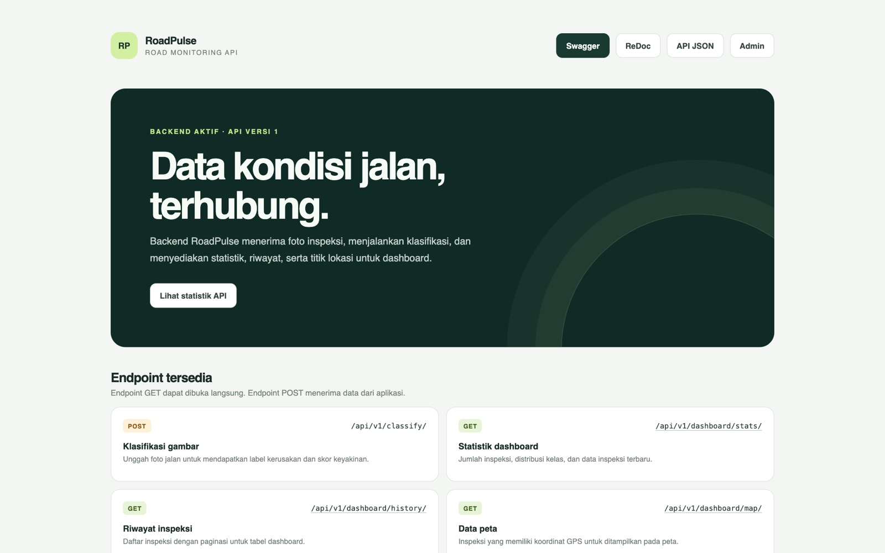
Gambar 19. Portal API (/) berisi tautan Swagger, ReDoc, API JSON, Admin, dan daftar endpoint.
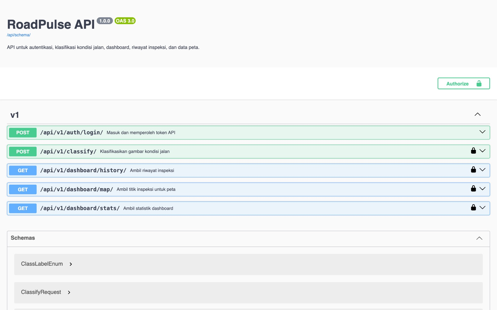
Gambar 20. Swagger UI (/api/docs/) untuk mencoba setiap endpoint.
6.2 Masuk Django Admin
Buka http://localhost:8000/admin/ (dari perangkat lain: http://<IP-LAN>:8000/admin/), atau langsung http://127.0.0.1:8001/admin/.
Masuk dengan akun staff/superuser. Akun biasa ditolak.
Halaman utama menampilkan grup Api › Inspection records, Auth Token › Tokens, dan Authentication and Authorization › Groups, Users.
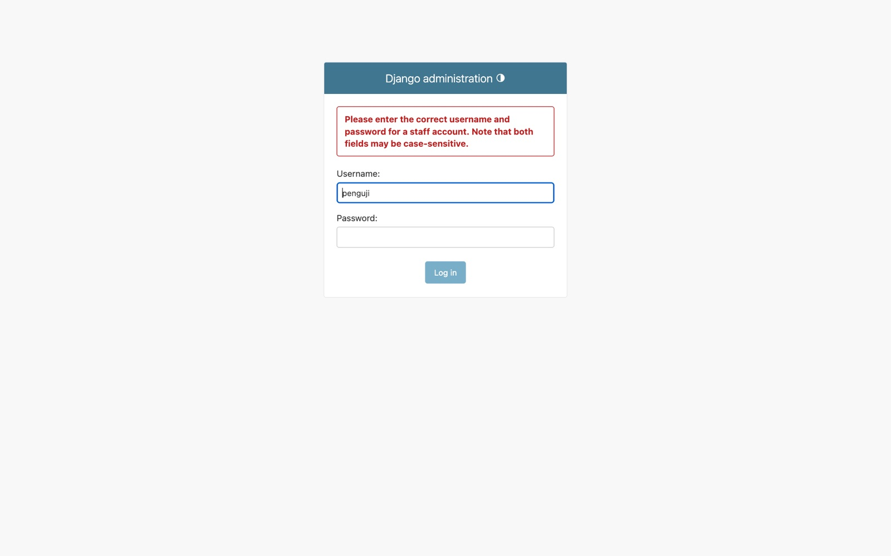
Gambar 21. Akun non-staff ditolak.
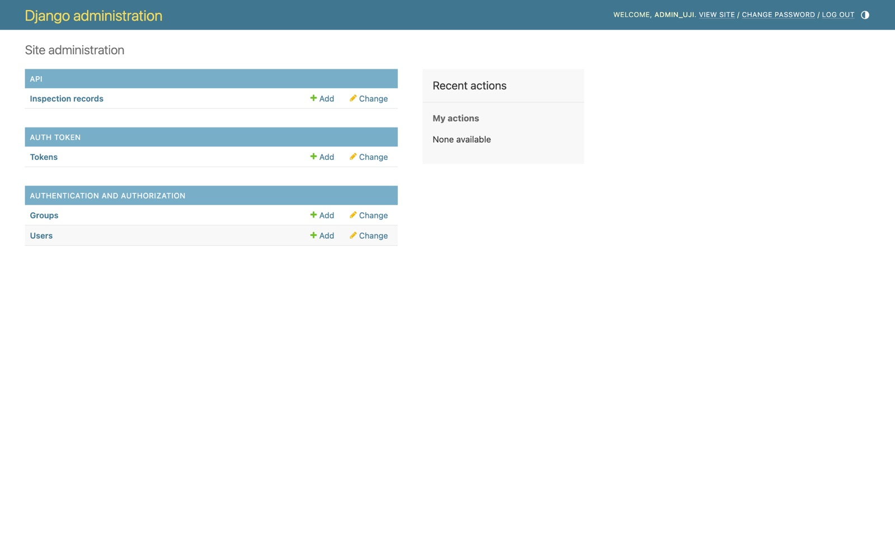
Gambar 22. Halaman utama Django Admin.
6.3 Mengelola record inspeksi
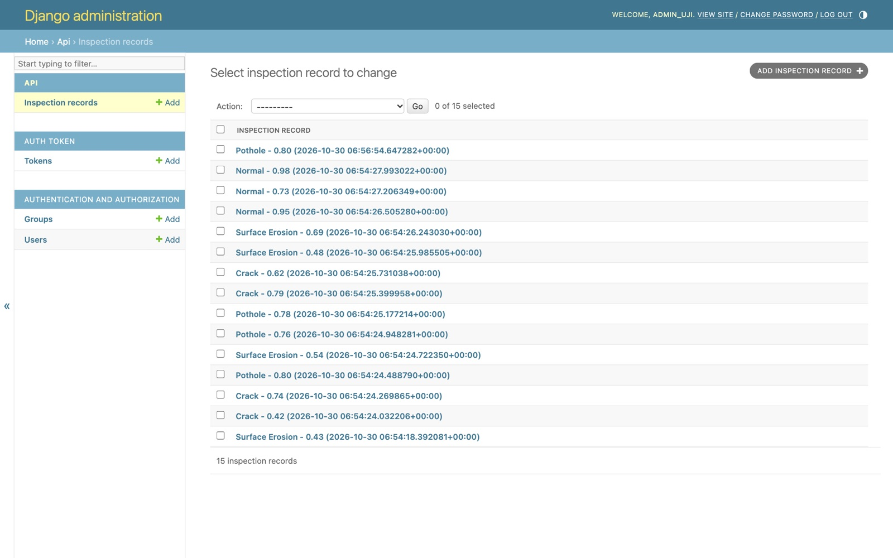
Gambar 23. Daftar Inspection records (data uji).
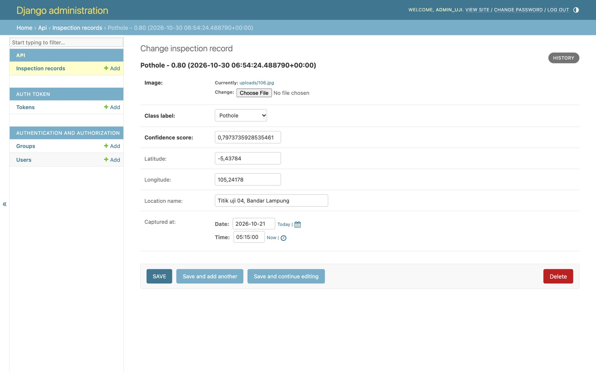
Gambar 24. Form ubah record: Image, Class label (Crack/Pothole/Surface Erosion/Normal), Confidence score, Latitude, Longitude, Location name, Captured at. Tombol Save, Save and add another, Save and continue editing, Delete.
Mengubah Class label di admin adalah satu-satunya cara mengoreksi hasil AI. Ini bukan fitur verifikasi: tidak ada status laporan, dan model tidak mencatat siapa yang mengoreksi. Riwayat perubahan hanya tersedia dari log bawaan Django Admin.
7. Skenario Jalur Utama (Happy Path)
Setiap skenario di bawah dijalankan pada instans lokal terpisah (database dan folder media sementara), memakai kode yang sama dengan aplikasi.
Gambar 25. Flowchart alur laporan kerusakan (klasifikasi foto) dari pengguna hingga hasil tersimpan, berlaku untuk web dan mobile.
HP-01 · Login dashboard web
1. Nama fitur
Login dashboard web
2. Tujuan
Mendapatkan token API dan membuka dashboard sebagai pengguna terdaftar.
3. Pra-syarat
Django dan proxy berjalan; akun dibuat oleh admin; frontend dibuka di login.html.
4. Aktor
Pengguna terdaftar, Administrator
5. Langkah
Isi username dan kata sandi.
Klik Masuk.
Tunggu pengalihan ke dashboard.
6. Input
Username (teks), kata sandi (teks tersembunyi).
7. Proses sistem
Browser mengirim POST /api/v1/auth/login/ (JSON). LoginView memanggil authenticate(), lalu Token.objects.get_or_create().
8. Output
HTTP 200 {"token": "…", "username": "…"}; token disimpan sebagai rp_token.
9. Kondisi berhasil
Halaman berpindah ke index.html dan status "API terhubung" (diuji).
10. Bukti
Bagian 4.1 (tangkapan layar asli) dan flowchart login di bawah.
Gambar 26. Flowchart login web sesuai frontend/js/login.js dan LoginView.
HP-02 · Klasifikasi foto jalan melalui web
1. Nama fitur
Klasifikasi foto jalan melalui web
2. Tujuan
Mengetahui kelas kerusakan jalan dari sebuah foto dan menyimpannya beserta lokasi.
Pesan "Analisis selesai dan hasil tersimpan." dan kartu hasil tampil. Diuji: Pothole/106.jpg → Pothole 79,7 %, lokasi "Jalan Dokter Susilo, Bandar Lampung".
10. Bukti
Bagian 4.3 (tangkapan layar asli).
HP-03 · Melihat statistik, peta, dan riwayat
1. Nama fitur
Melihat statistik, peta, dan riwayat
2. Tujuan
Memantau rekap seluruh inspeksi.
3. Pra-syarat
Backend berjalan; koneksi internet untuk grafik dan peta.
4. Aktor
Semua aktor
5. Langkah
Buka dashboard.
Gulir ke Ringkasan, Peta, dan Riwayat.
Pakai Sebelumnya/Berikutnya untuk halaman riwayat.
6. Input
Nomor halaman riwayat (otomatis).
7. Proses sistem
Tiga request paralel: /dashboard/stats/, /dashboard/history/?page=N, /dashboard/map/.
8. Output
Kartu & grafik per kelas, titik peta, tabel riwayat 10 baris.
9. Kondisi berhasil
Diuji: "14 inspeksi tersimpan", "12 titik foto berlokasi ditampilkan."
10. Bukti
Bagian 4.4–4.6 (tangkapan layar asli).
HP-04 · Mengunduh riwayat CSV
1. Nama fitur
Mengunduh riwayat CSV
2. Tujuan
Mengambil seluruh data inspeksi untuk diolah di spreadsheet.
3. Pra-syarat
Minimal satu record tersimpan.
4. Aktor
Semua aktor
5. Langkah
Klik Unduh CSV di header.
6. Input
—
7. Proses sistem
Mengambil halaman riwayat 1 hingga total_pages, menyusun CSV di browser.
8. Output
roadpulse-riwayat.csv.
9. Kondisi berhasil
Diuji: header + 15 record dari 2 halaman.
10. Bukti
Bagian 4.6.
HP-05 · Deteksi jalan dari aplikasi mobile
1. Nama fitur
Deteksi jalan dari aplikasi mobile
2. Tujuan
Memotret jalan di lapangan dan langsung memperoleh klasifikasi.
3. Pra-syarat
Expo Go, ponsel satu jaringan dengan server, izin kamera (dan lokasi).
4. Aktor
Pengguna terdaftar (sudah login di aplikasi)
5. Langkah
Di tab Beranda, ketuk Foto & analisis jalan.
Arahkan ke permukaan jalan, ketuk tombol rana.
Tunggu "Menganalisis gambar…".
Baca hasil; ketuk Foto lagi/Foto ulang atau Tutup.
6. Input
Foto kamera, GPS perangkat.
7. Proses sistem
Sama dengan HP-02 (endpoint yang sama), dikirim via XMLHttpRequest dengan batas waktu 35 detik.
8. Output
Layar Hasil Analisis (M4); ringkasan, peta, & riwayat dimuat ulang.
9. Kondisi berhasil
Kelas, keyakinan, dan lokasi tampil tanpa pesan error.
10. Bukti
Ilustrasi M1, M3, M4. Belum diverifikasi di perangkat dalam audit ini; endpoint yang sama telah diuji pada HP-02.
HP-06 · Koreksi data oleh administrator
1. Nama fitur
Koreksi data oleh administrator
2. Tujuan
Memperbaiki atau menghapus record inspeksi yang salah.
3. Pra-syarat
Akun staff/superuser; akses langsung ke port 8001.
4. Aktor
Administrator
5. Langkah
Login di http://localhost:8000/admin/.
Buka Inspection records → pilih record.
Ubah field lalu Save, atau Delete.
6. Input
Nilai field record.
7. Proses sistem
Form Django Admin memvalidasi dan menyimpan model InspectionRecord.
8. Output
Pesan sukses Django Admin; data dashboard ikut berubah.
9. Kondisi berhasil
Halaman daftar & form ubah terbuka (diuji). Penyimpanan perubahan tidak dijalankan agar data uji tetap konsisten.
10. Bukti
Bagian 6.2–6.3 dan flowchart koreksi data pada akhir bab ini.
HP-07 · Logout
1. Nama fitur
Logout
2. Tujuan
Mengakhiri sesi di browser.
3. Pra-syarat
Sudah login.
4. Aktor
Pengguna terdaftar, Administrator
5. Langkah
Klik Keluar.
6. Input
—
7. Proses sistem
localStorage.removeItem('rp_token'), lalu pindah ke login.html.
8. Output
Halaman login.
9. Kondisi berhasil
Diuji: URL menjadi /login.html dan token kosong.
10. Bukti
Bagian 4.7.
Gambar 27. Flowchart koreksi data oleh administrator. Verifikasi laporan tidak tersedia di aplikasi.
Gambar 28. Flowchart penanganan error saat mengirim foto, dari validasi browser hingga model AI.
8.1 Form dan autentikasi
UH-01 · Form login kosong
Kondisi pemicu
Klik Masuk dengan username atau kata sandi kosong.
Penyebab
Field wajib tidak diisi.
Validasi
login.js: if (!username || !password)
Respons sistem
Request tidak dikirim; kotak error tampil.
Pesan error
"Username dan kata sandi wajib diisi."
Solusi pengguna
Isi kedua field.
UH-02 · Username atau kata sandi salah
Kondisi pemicu
Kredensial tidak cocok.
Penyebab
authenticate() mengembalikan None.
Validasi
LoginView.post
Respons sistem
HTTP 401.
Pesan error
"Username atau kata sandi salah"
Solusi pengguna
Periksa huruf besar/kecil; minta admin mengatur ulang kata sandi lewat Django Admin.
UH-02b · Terlalu banyak percobaan login/daftar
Kondisi pemicu
Lebih dari 10 login per menit atau 5 pendaftaran per jam dari IP yang sama.
Penyebab
DRF ScopedRateThrottle (scope login/register).
Validasi
LoginView/RegisterView, api/exceptions.py
Respons sistem
HTTP 429 + header Retry-After.
Pesan error
"Terlalu banyak percobaan. Coba lagi dalam N detik."
Solusi pengguna
Tunggu sesuai waktu yang disebutkan. Batas dapat diubah lewat THROTTLE_LOGIN/THROTTLE_REGISTER di .env.
UH-03 · Server tidak terjangkau saat login
Kondisi pemicu
Backend/proxy mati atau alamat salah.
Penyebab
fetch gagal (network error).
Validasi
login.js blok catch
Respons sistem
Tombol aktif kembali, pesan tampil.
Pesan error
"Tidak bisa terhubung ke server. Pastikan backend sudah berjalan."
Solusi pengguna
Jalankan ./start.sh (Django 8001 + proxy 8000).
UH-04 · Akses Django Admin tanpa hak
Kondisi pemicu
Login admin dengan akun non-staff.
Penyebab
Akun tidak memiliki is_staff.
Validasi
Form login bawaan Django Admin
Respons sistem
Tetap di halaman login.
Pesan error
"Please enter the correct username and password for a staff account. Note that both fields may be case-sensitive."
Solusi pengguna
Minta admin mengaktifkan status staff.
UH-05 · Header token tidak valid
Kondisi pemicu
Request API membawa Authorization: Token <salah>.
Penyebab
Token salah, kedaluwarsa, atau sudah dicabut lewat logout.
Validasi
DRF TokenAuthentication
Respons sistem
HTTP 401; web kembali ke login.html, mobile kembali ke layar Masuk.
Pesan error
{"error":"Invalid token."}
Solusi pengguna
Login ulang.
8.2 Validasi unggahan
UH-06 · File bukan gambar (web)
Kondisi pemicu
Memilih/menyeret file non-gambar.
Penyebab
MIME tidak cocok image.*.
Validasi
app.js: handleFileSelect()
Respons sistem
Pesan di bawah tombol Analisis foto; file tidak dipakai.
Pesan error
"Pilih file gambar JPEG atau PNG."
Solusi pengguna
Pilih foto JPEG atau PNG.
UH-07 · File lebih dari 10 MB (web)
Kondisi pemicu
Memilih foto > 10 MB.
Penyebab
Batas ukuran klien.
Validasi
file.size > 10 * 1024 * 1024
Respons sistem
Pesan di bawah tombol Analisis foto.
Pesan error
"Ukuran foto maksimal 10 MB."
Solusi pengguna
Kompres atau perkecil foto.
UH-08 · Format GIF/WebP (lolos browser, ditolak server)
Kondisi pemicu
Mengunggah gambar selain JPEG/PNG.
Penyebab
Filter browser hanya image.*; server membatasi ekstensi.
Validasi
validate_image()
Respons sistem
HTTP 400; pesan tampil di bawah tombol.
Pesan error
"Only JPEG and PNG images are allowed"
Solusi pengguna
Konversi ke JPEG/PNG.
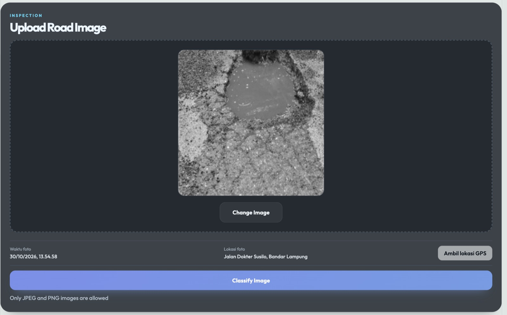
Gambar 29. Pesan error format pada dashboard (tangkapan layar asli).
UH-09 · File lebih dari 10 MB (API/mobile)
Kondisi pemicu
Request ke API dengan file > 10 MB.
Penyebab
Batas server.
Validasi
validate_image(max_size_mb=10)
Respons sistem
HTTP 400.
Pesan error
"File size exceeds 10MB limit"
Solusi pengguna
Perkecil foto.
UH-10 · Tanpa gambar atau gambar rusak
Kondisi pemicu
Field image kosong, atau file berekstensi .jpg tetapi isinya bukan gambar.
Penyebab
Validasi ImageField gagal.
Validasi
ClassifyRequestSerializer
Respons sistem
HTTP 400 dengan rincian per field.
Pesan error
"Invalid request data" + "No file was submitted." / "Upload a valid image. The file you uploaded was either not an image or a corrupted image."
Solusi pengguna
Unggah ulang foto yang valid.
UH-11 · Koordinat atau waktu tidak valid
Kondisi pemicu
latitude/longitude bukan angka, atau captured_at bukan ISO 8601.
Penyebab
Validasi tipe data.
Validasi
FloatField, DateTimeField
Respons sistem
HTTP 400.
Pesan error
"Invalid request data" + "A valid number is required." / "Datetime has wrong format. Use one of these formats instead: YYYY-MM-DDThh:mm[:ss[.uuuuuu]][+HH:MM|-HH:MM|Z]."
Solusi pengguna
Biarkan client mengisi otomatis; untuk API kirim angka desimal dan waktu ISO 8601.
UH-12 · GPS tidak tersedia (web)
Kondisi pemicu
Izin lokasi ditolak atau perangkat tanpa GPS.
Penyebab
Geolocation gagal (batas 15 s).
Validasi
app.js: getCurrentPosition()
Respons sistem
Analisis tetap berjalan tanpa titik peta.
Pesan error
"Izin/lokasi GPS tidak tersedia. Aktifkan lokasi perangkat lalu coba lagi." (+ " Analisis dilanjutkan tanpa titik peta.") / "Browser ini tidak mendukung akses GPS."
Solusi pengguna
Izinkan lokasi pada browser bila ingin tampil di peta.
8.3 Proses AI dan server
UH-13 · Model AI tidak tersedia
Kondisi pemicu
File .pt tidak ada, PyTorch tidak terpasang, atau checkpoint rusak.
Penyebab
ModelUnavailableError.
Validasi
model_loader.load_model()
Respons sistem
Record dihapus; HTTP 503.
Pesan error
"Trained model not found at …/mobilenetv2_road_damage.pt. Run python ai_model/train.py first." / "PyTorch and torchvision are required. Install backend/requirements.txt." / "Could not load trained model: …"
Solusi pengguna
Penyelenggara memasang dependensi atau melatih ulang model.
UH-14 · Prediksi gagal
Kondisi pemicu
Exception lain saat inferensi.
Penyebab
Kesalahan tak terduga di pipeline AI.
Validasi
ClassifyView blok except Exception
Respons sistem
Record dihapus; HTTP 500.
Pesan error
{"error": "Prediction failed", "details": "…"}; web: pesan error dari server, atau "Klasifikasi gagal. Periksa server dan model."
Solusi pengguna
Coba foto lain; laporkan ke penyelenggara.
UH-15 · Database gagal menyimpan
Kondisi pemicu
Database mati atau kredensial salah.
Penyebab
Koneksi DB gagal.
Validasi
ClassifyView: inspection.save() dibungkus try/except DatabaseError; error lain ditangkap api/exceptions.py.
Respons sistem
HTTP 503 (gagal simpan) atau 500, selalu dalam format JSON; detail dicatat di log server.
Pesan error
"Gagal menyimpan data inspeksi ke database. Coba lagi nanti." / "Terjadi kesalahan di server. Coba lagi nanti."
Tabel 15. Pesan error aplikasi mobile (dari mobile/App.js, screens/, components/)
Kondisi pemicu
Respons & pesan
Solusi
Login: username/kata sandi salah
Kolom kata sandi bergaris merah + "Username atau kata sandi salah"
Periksa ejaan, atau daftar akun baru.
Login/daftar: kolom kosong atau tidak valid
"Username wajib diisi." / "Kata sandi wajib diisi." / "Username 3–30 karakter." / "Hanya huruf, angka, titik, dan garis bawah." / "Minimal 8 karakter." / "Kata sandi tidak sama."
Perbaiki kolom yang ditandai merah.
Daftar: ditolak server
"Username sudah dipakai. Coba yang lain." atau pesan validator kata sandi Django (mis. terlalu umum / seluruhnya angka / mirip username)
Pilih username lain atau kata sandi yang lebih kuat.
Login/daftar: server tidak terjangkau
"Gagal terhubung ke server. Pastikan HP dan komputer satu Wi-Fi." / "Server tidak merespons. Periksa koneksi lalu coba lagi." / "Server belum mendukung pendaftaran. Perbarui backend." (HTTP 404)
Jalankan ./start.sh, samakan Wi-Fi, atau atur alamat lewat chip status.
Alert "Kamera tidak tersedia" — pesan sistem atau "Gagal membuka kamera."
Tutup aplikasi lain yang memakai kamera, buka ulang.
Foto gagal diambil
Alert "Gagal Mengambil Foto" — pesan sistem atau "Coba arahkan ulang kamera lalu ambil foto lagi."
Ulangi pengambilan.
Server tidak terjangkau (dashboard)
Status sistem Server: Offline dan tautan "Server tidak terjangkau — atur alamat server ›"; log "Koneksi timeout." / "Gagal terhubung ke server."
Samakan Wi-Fi, periksa IP & proxy, atau ketuk tautan untuk membuka Pengaturan.
Upload gagal/timeout
Kartu "Analisis gagal" berisi "Upload timeout." / "Gagal mengirim gambar ke server." / pesan error dari server + alamat server
Periksa koneksi, ulangi foto.
Respons bukan JSON
"Respon tidak valid (<kode HTTP>)"
Pastikan alamat mengarah ke proxy RoadPulse.
Alamat server kosong
Alert "Alamat kosong" — "Isi dengan IP LAN komputer, contoh http://192.168.1.10:8000"
Isi IP LAN komputer.
Izin lokasi ditolak
Status sistem GPS: Izin ditolak; di kamera "Mencari GPS"; koordinat "GPS belum tersedia" dan lokasi "Bandar Lampung, Lampung"
Izinkan lokasi agar titik muncul di peta.
Peta tidak termuat (tanpa internet/timeout 15 s)
"Peta tidak dapat dimuat" — "Peta tidak merespons. Periksa koneksi internet HP." / "Tile peta OpenStreetMap gagal dimuat." / "Pustaka peta tidak dapat diunduh." + tombol Coba lagi
Aktifkan internet HP, ketuk Coba lagi.
Titik peta gagal diambil dari server
"Titik peta gagal dimuat: <pesan>" di bawah peta
Periksa koneksi server, tarik untuk segarkan.
Halaman riwayat berikutnya gagal
"Gagal memuat halaman berikutnya: <pesan>"
Ketuk Muat lebih banyak lagi.
Keyakinan model < 50 %
Kotak "Hasil kurang yakin, sebaiknya foto ulang" + tombol Foto ulang (hasil tetap tersimpan); di riwayat & detail angka keyakinan berwarna kuning dan "hasil ini sebaiknya dicek ulang"
Foto lebih dekat, terang, tidak buram.
8.5 Kondisi lain
Tabel 16. Perilaku data tidak ditemukan dan request tidak valid
Kondisi
Respons nyata
Keterangan
Endpoint tidak ada (mis. /api/v1/laporan/)
HTTP 404
Halaman 404 bawaan Django.
GET /api/v1/classify/
HTTP 405 {"detail":"Method \"GET\" not allowed."}
Klasifikasi hanya menerima POST.
Riwayat ?page=999 atau ?page=abc
HTTP 200, mengembalikan halaman terakhir/pertama
Paginator.get_page() tidak mengembalikan 404.
Login API dengan body kosong
HTTP 401 "Username atau kata sandi salah"
Validasi kosong hanya di frontend.
Peta tanpa internet
"Peta tidak dapat dimuat. Periksa koneksi internet."
Leaflet dimuat dari CDN.
Belum ada data
"Belum ada hasil klasifikasi." / "Belum ada foto dengan data GPS…" / mobile "Belum ada laporan" (Beranda), "Belum ada inspeksi" (Riwayat), "Tidak ada yang cocok" (filter), "Belum ada inspeksi dengan koordinat GPS…" (peta)
Kondisi kosong normal.
9. Notes for Tester
Status ditentukan dari pemeriksaan kode dan pengujian nyata pada 30 Oktober 2026. Sejak 3 November 2026 proyek memiliki 18 automated test (cd backend && venv311/bin/python manage.py test api, lolos juga di PostgreSQL pada 6 November 2026 → "Ran 18 tests … OK") yang menguji klasifikasi (model ditiru), validasi unggahan, error database/model dalam format JSON, statistik, riwayat, peta, login, daftar, dan pembatasan percobaan. Pengujian lain di bawah dilakukan secara manual/skrip oleh penyusun.
Tabel 17. Ringkasan pengujian yang benar-benar dijalankan
Pengujian
Hasil
Django system check (PostgreSQL & SQLite)
Lolos, 0 isu
Akurasi AI pada 377 gambar validasi (split 80/20, seed 42 seperti train.py)
84,1 % (317/377), 0 error; per kelas: Normal 100 %, Crack 84,6 %, Surface Erosion 82,9 %, Pothole 72,1 %
authFetch() di semua request; logout mencabut token di server
—
Token lama ditolak (401) setelah logout
Logout → buka index.html langsung (diarahkan ke login)
Aplikasi mobile
Partial
Bundle Android/iOS lolos; tanpa uji perangkat
Perilaku di ponsel belum terbukti
Butuh satu jaringan dengan server
HP-05 di Android & iOS; uji ganti Wi-Fi, tema Terang/Gelap, peta, filter riwayat
Akurasi kelas Pothole
Partial
Recall 72,1 %; 17/68 terbaca Surface Erosion
Lubang dapat terlewat
Heuristik "pothole basah" tidak pernah aktif pada data validasi
Uji foto lubang basah/berlumpur
Waktu foto (web)
Partial
EXIF, cadangan file.lastModified
Waktu bisa tidak sesuai saat pemotretan
Foto hasil kirim ulang kehilangan EXIF
Unggah foto tanpa EXIF; bandingkan waktu
Bahasa antarmuka web
Complete
Diseragamkan ke Bahasa Indonesia (3 Nov 2026): judul, tombol, label kelas, pesan unggah
Pesan validasi dari server (mis. "Only JPEG and PNG images are allowed") masih berbahasa Inggris
—
Telusuri semua teks UI
9.3 Not implemented / belum tersedia
Tabel 20. Fitur yang tidak ditemukan
Fitur
Status
Bukti teknis
Dampak bagi pengguna
Catatan tester
Skenario uji
Registrasi akun
Complete
RegisterView + tab Daftar di web & mobile; dibatasi 5/jam per IP
Siapa pun dapat membuat akun biasa
Akun baru bukan staff
Daftar di web → login di mobile; username kembar; percobaan ke-6 dalam satu jam → HTTP 429
Verifikasi & status laporan
Not implemented
Tidak ada field status di model
Tidak bisa melacak tindak lanjut
Koreksi hanya via admin
—
Role pelapor/verifikator
Not implemented
Tidak ada grup/permission khusus
—
—
—
Edit/hapus dari dashboard
Not implemented
Tidak ada endpoint PUT/DELETE
Harus lewat admin
—
—
Filter & pencarian riwayat
Not implemented
API history hanya parameter page; filter kelas di mobile hanya pada data yang sudah dimuat
Sulit mencari data lama
—
Filter mobile → bandingkan dengan total server
Login & daftar di mobile
Complete
LoginScreen.js, RegisterView; sesi di AsyncStorage; token dikirim di setiap request (services/api.js)
—
Akun mobile juga bisa login web
Daftar akun baru → keluar → masuk lagi; username kembar; kata sandi lemah
Reset kata sandi; notifikasi
Not implemented
Tidak ada kode terkait
—
—
—
Automated tests
Complete
18 test backend (api/tests.py), semua lulus
Belum ada test frontend/mobile
Jalankan sebelum commit
manage.py test api
9.4 Integration pending / integrasi belum selesai
Tabel 21. Integrasi yang belum selesai
Fitur
Status
Bukti teknis
Dampak bagi pengguna
Catatan tester
Skenario uji
Database
Complete
Selesai 6 Nov 2026: PostgreSQL 18 (Roadpulse_db) aktif dan dipakai ./start.sh. Data SQLite (3 akun, 3 token, 24 record) dipindahkan dengan dumpdata/loaddata; 18 test lolos
—
SQLite tetap tersedia: DB_ENGINE=sqlite ./start.sh; backup di backend/db_backups/
HP-02 lalu cek record baru di pgAdmin
Konfigurasi sensitif
Integration pending
backend/.env ter-track di Git
Risiko kebocoran kredensial
Isi tidak dibuka dalam audit ini
Pastikan .env tidak lagi di-commit
Ikon aplikasi mobile
Complete
Ikon mahkota Siger di atas emerald (icon.png, adaptive icon Android + monokrom, favicon); app.json memakai #20C997
—
—
Lihat ikon di layar utama HP setelah build
Perubahan lokal
Integration pending
Perbaikan belum di-commit (lihat Informasi Dokumen)
Tim lain belum memperoleh perbaikan
—
Uji ulang setelah commit
9.5 Known issues / masalah yang diketahui
Tabel 22. Masalah yang diketahui
Fitur
Status
Bukti teknis
Dampak bagi pengguna
Catatan tester
Skenario uji
KI-01 Admin lewat proxy
Complete
Diperbaiki 3 Nov 2026: proxy meneruskan header Host asli; IP LAN otomatis diizinkan saat DEBUG dan sejak 6 Nov 2026 dibaca ulang tiap request, sehingga pindah Wi-Fi/hotspot tidak memerlukan restart. Login via 8000 tidak lagi 403
—
—
Login admin via http://<IP-LAN>:8000/admin/
KI-02 Token tidak valid
Complete
Token salah/dicabut → 401; web & mobile otomatis kembali ke login
—
—
UH-05
KI-03 Gagal simpan DB
Complete
Diperbaiki 3 Nov 2026: save() dalam try + api/exceptions.py; diuji di api/tests.py
HTTP 503 JSON dengan pesan jelas
—
Matikan DB → unggah foto
KI-04 Hasil keyakinan rendah
Known issue
Contoh data uji: Crack/1002.jpg → Surface Erosion 43 %
Klasifikasi bisa keliru
Mobile memperingatkan < 50 %; web tidak
Bandingkan label asli vs hasil
KI-05 Pagination
Known issue
page di luar rentang → 200 halaman terakhir
Tidak ada pesan "tidak ditemukan"
Perilaku Django Paginator
?page=999
10. Penutup
10.1 Ringkasan penggunaan
Penyelenggara menjalankan semua layanan dengan ./start.sh (Django 8001, proxy 8000, web 3000, Expo).
Petugas memotret jalan dengan aplikasi mobile atau mengunggah foto di dashboard web; lokasi diambil dari GPS.
Sistem mengklasifikasikan foto ke Crack, Pothole, Surface Erosion, atau Normal beserta tingkat keyakinan.
Hasil dapat dipantau lewat statistik, peta, riwayat, dan file CSV.
Administrator mengoreksi atau menghapus data lewat Django Admin (/admin/ di port 8000).
10.2 Catatan pengembangan
Prioritas tinggi: database aktif sudah PostgreSQL (kata sandi lokal roadpulse, ganti dengan yang kuat di server); keluarkan backend/.env dan db.sqlite3 dari Git dan ganti kredensialnya; ikuti dokumen Panduan Deploy & Hosting sebelum memasang di server.
Keamanan & akses: data sudah wajib login dan unggah dibatasi per akun (THROTTLE_CLASSIFY); pertimbangkan masa berlaku token dan peran pelapor/verifikator.
Fitur laporan: tambahkan field status dan alur verifikasi bila dibutuhkan dinas; tambahkan filter riwayat dan endpoint detail.
Kualitas AI: tambah foto lubang basah/berlumpur/malam dari lapangan, lalu latih ulang dengan ai_model/train.py dan bandingkan memakai --eval.
Kualitas perangkat lunak: tambah test untuk frontend/mobile dan uji aplikasi di HP Android & iPhone sungguhan.
Lampiran A · Daftar endpoint API
Tabel 23. Endpoint API
Method
Endpoint
Fungsi
Akses
GET
/api/v1/
Daftar endpoint
Publik
POST
/api/v1/classify/
Klasifikasi foto (multipart), maks. 120/jam per akun
Token
GET
/api/v1/dashboard/stats/
Total, distribusi, 5 terbaru
Token
GET
/api/v1/dashboard/history/?page=N
Riwayat 10 per halaman
Token
GET
/api/v1/dashboard/map/
Titik ber-GPS (maks. 1000)
Token
POST
/api/v1/auth/login/
Token login
Publik
POST
/api/v1/auth/register/
Daftar akun biasa + token (HTTP 201)
Publik
POST
/api/v1/auth/logout/
Mencabut token (HTTP 204)
Token
GET
/privacy/, /healthz/
Kebijakan Privasi; health check server & database
Publik
GET
/api/docs/, /api/redoc/, /api/schema/
Dokumentasi OpenAPI
Publik
—
/admin/
Django Admin
Staff
Lampiran B · Istilah
Tabel 24. Glosarium
Istilah
Arti
API
Antarmuka yang dipakai web dan mobile untuk bertukar data dengan server.
Proxy
Program perantara (proxy.js) yang membuka port 8000 ke jaringan dan meneruskan ke Django.
Confidence / keyakinan
Probabilitas softmax kelas terpilih (0–100 %), bukan jaminan kebenaran.
EXIF
Metadata foto (waktu, GPS, orientasi) yang disimpan kamera.
Token
Kode akses yang diberikan saat login dan disimpan di browser.
IP LAN
Alamat komputer di jaringan lokal (mis. 192.168.x.x) yang dipakai ponsel untuk menjangkau server.